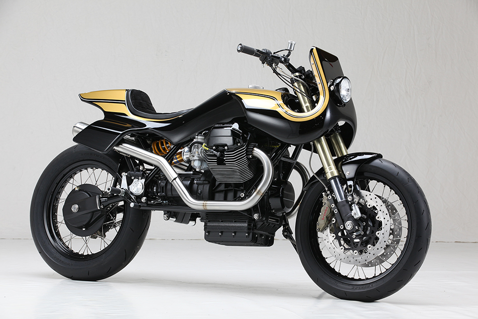

Moto Guzzi Le Mans 850

El renacimiento de una leyenda en dos ruedas
La motocicleta icónica que combina elegancia italiana y rendimiento excepcional.
Moto Guzzi, la emblemática marca italiana de motocicletas, ha revivido una de sus leyendas con la impresionante Moto Guzzi Le Mans 850. Esta motocicleta, que rinde homenaje al modelo clásico de los años 70, ha sido reinventada con un estilo cautivador y un rendimiento potente para los amantes de las dos ruedas que buscan una experiencia de conducción inigualable.
La Moto Guzzi Le Mans 850 se presenta con un diseño atemporal que combina elegancia y agresividad en cada detalle. Sus líneas limpias y fluidas, junto con su carenado aerodinámico, le confieren una apariencia sofisticada y aerodinámica que evoca la herencia italiana de la marca. Con colores clásicos y acabados refinados, esta motocicleta se convierte en una verdadera obra de arte sobre ruedas.
Pero la Moto Guzzi Le Mans 850 no es solo una belleza estética; su rendimiento está a la altura de su apariencia impresionante. Equipada con un motor bicilíndrico en V de 850 cc, esta máquina italiana desata una potencia emocionante que proporciona una aceleración rápida y una velocidad máxima impresionante. La entrega de potencia es suave y controlable, lo que permite un control preciso en cada giro del acelerador.
La suspensión de alta gama y los frenos de alto rendimiento aseguran una experiencia de conducción excepcionalmente ágil y segura. La estabilidad en las curvas y la capacidad de respuesta del chasis de la Le Mans 850 permiten a los motociclistas sentirse confiados y en control en todo momento. Además, la ergonomía cuidadosamente diseñada ofrece una posición de conducción cómoda y ergonómica, lo que permite disfrutar de largos viajes sin sacrificar el confort.
La tecnología también desempeña un papel importante en la Moto Guzzi Le Mans 850. Un panel de instrumentos moderno y completo proporciona información esencial al conductor, incluyendo la velocidad, el nivel de combustible y el cuentakilómetros. Además, cuenta con características de conectividad que permiten integrar dispositivos móviles para acceder a aplicaciones y funciones de navegación, brindando una experiencia de conducción más conectada.
En resumen, la Moto Guzzi Le Mans 850 encarna la perfecta fusión entre el legado clásico de la marca y las innovaciones contemporáneas. Con su diseño cautivador, rendimiento potente y tecnología avanzada, esta motocicleta italiana se ha ganado su lugar en la historia y en el corazón de los apasionados de las motos. Si buscas una experiencia de conducción emocionante y elegante que combine la tradición con la vanguardia, la Moto Guzzi Le Mans 850 es la elección perfecta para ti.
La Moto Guzzi Le Mans 850 se presenta con un diseño atemporal que combina elegancia y agresividad en cada detalle. Sus líneas limpias y fluidas, junto con su carenado aerodinámico, le confieren una apariencia sofisticada y aerodinámica que evoca la herencia italiana de la marca. Con colores clásicos y acabados refinados, esta motocicleta se convierte en una verdadera obra de arte sobre ruedas.
Pero la Moto Guzzi Le Mans 850 no es solo una belleza estética; su rendimiento está a la altura de su apariencia impresionante. Equipada con un motor bicilíndrico en V de 850 cc, esta máquina italiana desata una potencia emocionante que proporciona una aceleración rápida y una velocidad máxima impresionante. La entrega de potencia es suave y controlable, lo que permite un control preciso en cada giro del acelerador.
La suspensión de alta gama y los frenos de alto rendimiento aseguran una experiencia de conducción excepcionalmente ágil y segura. La estabilidad en las curvas y la capacidad de respuesta del chasis de la Le Mans 850 permiten a los motociclistas sentirse confiados y en control en todo momento. Además, la ergonomía cuidadosamente diseñada ofrece una posición de conducción cómoda y ergonómica, lo que permite disfrutar de largos viajes sin sacrificar el confort.
La tecnología también desempeña un papel importante en la Moto Guzzi Le Mans 850. Un panel de instrumentos moderno y completo proporciona información esencial al conductor, incluyendo la velocidad, el nivel de combustible y el cuentakilómetros. Además, cuenta con características de conectividad que permiten integrar dispositivos móviles para acceder a aplicaciones y funciones de navegación, brindando una experiencia de conducción más conectada.
En resumen, la Moto Guzzi Le Mans 850 encarna la perfecta fusión entre el legado clásico de la marca y las innovaciones contemporáneas. Con su diseño cautivador, rendimiento potente y tecnología avanzada, esta motocicleta italiana se ha ganado su lugar en la historia y en el corazón de los apasionados de las motos. Si buscas una experiencia de conducción emocionante y elegante que combine la tradición con la vanguardia, la Moto Guzzi Le Mans 850 es la elección perfecta para ti.
La motocicleta Moto Guzzi Le Mans 850 se destaca por su estilo clásico y su rendimiento excepcional. A continuación se detallan algunas de sus características distintivas:
Motor: La Moto Guzzi Le Mans 850 está equipada con un potente motor bicilíndrico en V de 850 cc. Este motor ofrece una entrega de potencia suave y controlable, brindando una aceleración rápida y una velocidad máxima impresionante. Además, el diseño del motor en V proporciona un centro de gravedad bajo, lo que contribuye a una mejor estabilidad y maniobrabilidad.
Diseño clásico: La estética de la Moto Guzzi Le Mans 850 es un tributo al diseño clásico de los modelos Le Mans de los años 70. Con líneas limpias, carenado aerodinámico y colores icónicos, esta motocicleta evoca la elegancia atemporal y el estilo italiano que caracteriza a la marca.
Chasis y suspensión: La Le Mans 850 cuenta con un chasis robusto y rígido que garantiza una excelente estabilidad y manejo preciso. La suspensión delantera y trasera de alta gama proporciona un viaje suave y cómodo, absorbiendo eficazmente los golpes y las irregularidades del camino.
Frenos de alto rendimiento: La motocicleta está equipada con un sistema de frenos de alto rendimiento que garantiza una potencia de frenado eficiente y confiable. Los discos de freno delanteros y traseros brindan una respuesta rápida y una gran capacidad de frenado, lo que contribuye a la seguridad y el control durante la conducción.
Panel de instrumentos moderno: La Le Mans 850 cuenta con un panel de instrumentos completo y moderno que proporciona información esencial al conductor. Incluye velocímetro, cuentakilómetros, indicadores de combustible y otros datos importantes para mantener al conductor informado durante todo el viaje.
Tecnología y conectividad: La motocicleta ofrece opciones de conectividad que permiten la integración de dispositivos móviles. Esto permite al conductor acceder a aplicaciones de navegación, música y otras funciones a través de la pantalla del tablero, mejorando así la experiencia de conducción y la comodidad del usuario.
Ergonomía y comodidad: La Moto Guzzi Le Mans 850 ha sido diseñada con una posición de conducción ergonómica que brinda comodidad tanto en viajes cortos como largos. El asiento y los controles están ubicados de manera óptima para ofrecer una experiencia de conducción cómoda y controlada.
Estas son solo algunas de las características destacadas de la Moto Guzzi Le Mans 850. Con su estilo clásico, rendimiento potente y atención al detalle, esta motocicleta captura la esencia de la tradición y la pasión por las dos ruedas que caracteriza a Moto Guzzi.
Motor: La Moto Guzzi Le Mans 850 está equipada con un potente motor bicilíndrico en V de 850 cc. Este motor ofrece una entrega de potencia suave y controlable, brindando una aceleración rápida y una velocidad máxima impresionante. Además, el diseño del motor en V proporciona un centro de gravedad bajo, lo que contribuye a una mejor estabilidad y maniobrabilidad.
Diseño clásico: La estética de la Moto Guzzi Le Mans 850 es un tributo al diseño clásico de los modelos Le Mans de los años 70. Con líneas limpias, carenado aerodinámico y colores icónicos, esta motocicleta evoca la elegancia atemporal y el estilo italiano que caracteriza a la marca.
Chasis y suspensión: La Le Mans 850 cuenta con un chasis robusto y rígido que garantiza una excelente estabilidad y manejo preciso. La suspensión delantera y trasera de alta gama proporciona un viaje suave y cómodo, absorbiendo eficazmente los golpes y las irregularidades del camino.
Frenos de alto rendimiento: La motocicleta está equipada con un sistema de frenos de alto rendimiento que garantiza una potencia de frenado eficiente y confiable. Los discos de freno delanteros y traseros brindan una respuesta rápida y una gran capacidad de frenado, lo que contribuye a la seguridad y el control durante la conducción.
Panel de instrumentos moderno: La Le Mans 850 cuenta con un panel de instrumentos completo y moderno que proporciona información esencial al conductor. Incluye velocímetro, cuentakilómetros, indicadores de combustible y otros datos importantes para mantener al conductor informado durante todo el viaje.
Tecnología y conectividad: La motocicleta ofrece opciones de conectividad que permiten la integración de dispositivos móviles. Esto permite al conductor acceder a aplicaciones de navegación, música y otras funciones a través de la pantalla del tablero, mejorando así la experiencia de conducción y la comodidad del usuario.
Ergonomía y comodidad: La Moto Guzzi Le Mans 850 ha sido diseñada con una posición de conducción ergonómica que brinda comodidad tanto en viajes cortos como largos. El asiento y los controles están ubicados de manera óptima para ofrecer una experiencia de conducción cómoda y controlada.
Estas son solo algunas de las características destacadas de la Moto Guzzi Le Mans 850. Con su estilo clásico, rendimiento potente y atención al detalle, esta motocicleta captura la esencia de la tradición y la pasión por las dos ruedas que caracteriza a Moto Guzzi.